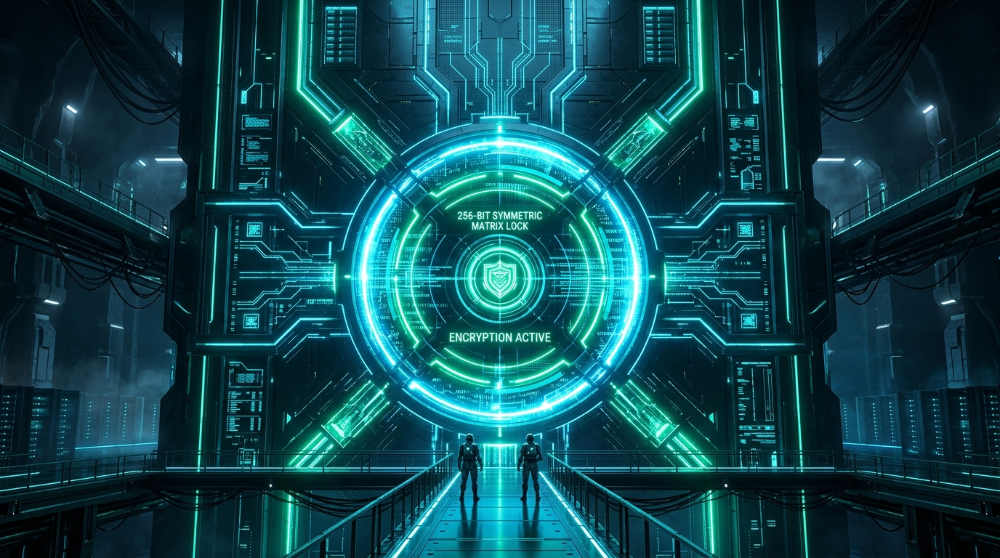
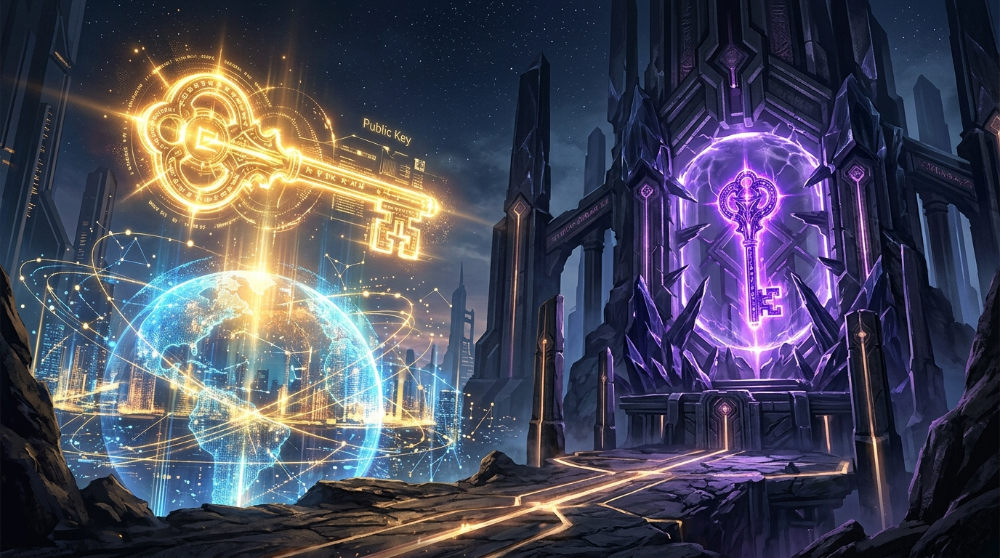
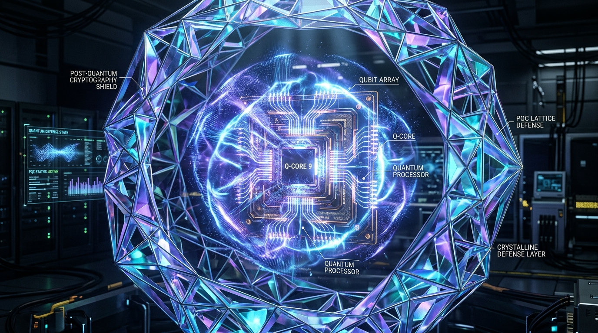

Modern Cryptography
For Beginners
The comprehensive visual guide to how human civilization protects secrets, verifies identity, and powers trillions in digital security across an untrusted internet.
Why Does Cryptography Matter to You?
Without cryptography, modern civilization would immediately grind to a halt. Every transaction and click relies on invisible math.
$5+ Trillion Daily
Every bank transfer, ATM withdrawal, Apple Pay tap, and stock trade relies on instant encryption to stop theft and forgery.
FINANCIAL PILLAR3 Billion Messengers
WhatsApp, Signal, and iMessage encrypt trillions of texts end-to-end so not even telecom providers or ISPs can read them.
PRIVATE COMMUNICATION100% of the Web
The green padlock in your browser bar (HTTPS) creates a private armored tunnel through millions of miles of public internet wire.
INFRASTRUCTUREMeet Alice, Bob, Eve & Mallory
In 1978, Ron Rivest coined standard personas so cryptographers could explain protocols without getting tangled in technical jargon.
Alice
THE SENDERThe honest creator of the message who wants to transmit confidential thoughts across an untrusted network.
Bob
THE RECEIVERThe honest intended recipient who must decode the ciphertext and verify Alice really wrote it.
Eve
PASSIVE EAVESDROPPERSilently monitors the wire. Tries to read the confidential plaintext without modifying or interrupting transmission.
Mallory
ACTIVE ADVERSARYMalicious attacker who intercepts, tampers with, replays, or injects fake packets into the line (Man-in-the-Middle).
The 4 Pillars of Cryptography
Beginners often believe cryptography is only about secrecy. Modern crypto actually solves four fundamental security guarantees:
1. Confidentiality
"Can anyone else read it?"
Ensures that unintended eavesdroppers see only scrambled gibberish.
2. Integrity
"Was the message altered?"
Detects whether an attacker flipped even a single bit during transit.
3. Authentication
"Who actually sent this?"
Mathematically confirms the sender's true identity and prevents impersonation.
4. Non-Repudiation
"Can they deny it later?"
Provides irrefutable cryptographic proof of origin that holds up in a court of law.
Encoding vs. Hashing vs. Encryption
The most common mistake beginners make is treating these three operations as interchangeable. They serve radically different purposes:
Encoding
Converts data format for safe transmission across networks. Has ZERO security. Anyone can decode it instantly without a key.
"Hello" ➔ "SGVsbG8=" (Reversible by all)
Hashing
Creates a unique fixed-length digital fingerprint. Completely one-way and irreversible. Ideal for password verification and tamper detection.
"Hello" ➔ 185f8db3... (Irreversible)
Encryption
Scrambles data to ensure confidentiality. Reversible ONLY if you hold the correct secret key. Protects secret content.
"Hello" + Key ➔ 9fa82e... (Need Key)
Interactive Lab: Encoding vs. Hashing vs. Encryption
Type any text below to watch how the 3 fundamental operations process your message in real-time:
Zero security. Notice anyone can decode it instantly without asking for a password!
Irreversible digital fingerprint. Exactly 256 bits. Permanent compression—mathematically impossible to undo.
Scrambled with secret key. Reversible ONLY when the recipient enters the matching key!
Stage 1 Checkpoint: Foundations & Goals
Make sure these fundamental definitions and security pillars are solid before examining classical ciphers.
✦ Click any checkbox to test your recall.
✦ Next up: Part 2: Classical Ciphers & Lessons from History
The Evolution of Secret Writing
For 2,000 years, cryptography was an art of hand-written substitution and mechanical rotors. Understanding why classical ciphers fell guides modern digital defense.
The Caesar Shift: Modular Arithmetic
Every letter in the plaintext is shifted down the alphabet by a fixed integer key k.
Mathematical Formulation
Let alphabet letters be integers: A=0, B=1, ... Z=25.
Decryption: P = (C - k) mod 26
If k = 3:
Plaintext: ATTACK AT DAWN
Ciphertext: DWWDFN DW GDZQ
The Fatal Vulnerability
A human with a pencil can test all 25 possible shifts in under 2 minutes. A modern computer tests them in 0.00001 milliseconds (**Brute Force Attack**).
Frequency Analysis: Language Fingerprints
Invented in Baghdad by 9th-century polymath Al-Kindi: human languages are not random noise. They leave clear statistical traces.
English Letter Frequency Distribution
In standard English, the letter E appears 12.7% of the time, followed by T (9.1%), A (8.2%), and O (7.5%).
How Eve Breaks It Without The Key
Even if the alphabet is completely scrambled (all 26! combinations = $4 \times 10^{26}$ keys):
- Count which ciphertext letter appears most often. It is almost certainly E.
- Find common three-letter repetitions like
THEandAND. - The entire cipher collapses within minutes.
Interactive Caesar Wheel & Live Frequency Spectrum
Drag the shift key slider to rotate the substitution alphabet and watch English letter frequency shift with it:
Plaintext Input:
Ciphertext Output:
Live Ciphertext Letter Frequency:
Notice how the highest peak (English 'E' at 12.7%) moves directly to the shifted letter:
The Enigma Machine & Polyalphabetic Shifts
To defeat frequency analysis, engineers created polyalphabetic ciphers: the substitution alphabet changes with every single keystroke!
Stepping Rotors
Pressing a key turned a physical rotor. Typing "AAAAA" might encrypt to "XQWLB". Frequency analysis on single letters was completely neutralized.
The Fatal Flaw
Enigma's reflector had a hardware constraint: a letter could NEVER encrypt to itself! (e.g. 'A' could never produce 'A').
Turing's Bombe
At Bletchley Park, Alan Turing and Gordon Welchman built electromechanical computers exploiting this flaw, shaving 2+ years off WW2.
The One-Time Pad (OTP): Unbreakable Math
In 1949, Claude Shannon mathematically proved that true unbreakable secrecy is possible. But it comes with a massive cost.
The 3 Unbreakable Rules
The Key Distribution Dilemma
If Alice and Bob already have a secure way to physically transport a 1 GB truly random key pad (e.g. in a locked briefcase handcuffed to a courier)...
The One-Time Pad doesn't eliminate the key exchange problem—it merely postpones it!
Stage 2 Checkpoint: Classical Ciphers & Lessons
Confirm the mathematical insights of historical cryptanalysis before exploring modern symmetric block ciphers.
✦ Click any checkbox to test your recall.
✦ Next up: Part 3: Symmetric Cryptography & AES
Quick Quiz: Foundations & Classical Ciphers
Test your intuition on basic encoding and letter frequency before moving to symmetric algorithms.
One Key to Rule Them All
In symmetric cryptography, Alice and Bob use the exact same secret key for both scrambling and unscrambling data.
⚡ Lightning Fast
Hardware-accelerated AES-NI encrypts over 10 GB/second on a laptop CPU.
⚠️ Shared Secret Trap
If the key leaks once, all past and future communications are compromised.

Inside AES: The 4 Transformation Layers
Selected by NIST in 2001 (Rijndael cipher), AES breaks 128-bit data blocks into a 4x4 grid of bytes, scrambling them over 14 intense rounds:
SubBytes
Every byte is non-linearly substituted using an invertible S-Box table based on Galois Field finite math.
ShiftRows
The rows of the 4x4 matrix are cyclically shifted: Row 0 shifts 0, Row 1 shifts 1, Row 2 shifts 2, Row 3 shifts 3.
MixColumns
Columns are multiplied by a fixed polynomial matrix, spreading 1 byte's change across all 4 bytes.
AddRoundKey
The 128-bit round subkey derived from master key is XORed directly into the state matrix.
Two Philosophies: Blocks vs. Streams
How do you encrypt a continuous flow of video or a multi-gigabyte database file?
Block Ciphers (AES)
Divides message into rigid fixed-size blocks (AES = exactly 128 bits / 16 bytes).
- Requires padding (PKCS#7) if data isn't a multiple of 16 bytes.
- Operates through modes of operation (CBC, CTR, GCM).
- Massively accelerated by modern Intel & AMD silicon (AES-NI).
Stream Ciphers (ChaCha20)
Generates an infinite pseudorandom keystream and XORs it bit-by-bit directly with the plaintext.
- Zero padding needed—encrypts arbitrary single bytes instantly.
- Blazing fast on mobile phones and IoT devices without AES hardware.
- Designed by Daniel J. Bernstein; standard in TLS 1.3 & WireGuard.
Why Naive Mode (ECB) Leaks Secrets
Electronic Codebook (ECB) encrypts every 16-byte block independently with the exact same key. The result is catastrophic.
Deterministic Flaw
In ECB mode:
Block "AAAA" ➔ Always encrypts to "X7Z9".
Block "AAAA" ➔ Always encrypts to "X7Z9".
If you encrypt a bitmap image of the Linux Penguin (Tux) with AES-ECB, every white pixel block turns into the same scrambled color. The penguin remains completely visible!
The ECB Penguin Visual
↓ Encrypted with AES-ECB ↓
░░░░░░░░░░░░░░░░
░░░░░██████░░░░░
░░░░████████░░░░
░░░░███░░███░░░░
░░░░░██████░░░░░
░░░░████████░░░░
░░░░░░░░░░░░░░░░
[ Outline 100% Visible! ]
Interactive Simulator: ECB vs. CBC/GCM Pattern Leak
Switch between ECB (naive deterministic blocks) and modern GCM (randomized nonce) to see what happens to data patterns:
Mode: AES-ECB (Electronic Codebook)
Choose AES Operational Mode:
Electronic Codebook (ECB) encrypts each 16-byte block independently. Every white pixel block turns into the exact same cipher block, preserving the penguin outline!
Modern Defense: AES-256-GCM (AEAD)
To fix ECB, modern protocols use Authenticated Encryption with Associated Data (AEAD).
1. The Nonce / IV
A unique "Number Used Once" (Initialization Vector) randomized for every message. Even if you encrypt "Hello" 100 times, every ciphertext looks completely distinct.
2. Counter Mode (CTR)
Turns the block cipher into a parallelized stream cipher. Multi-core processors encrypt gigabytes simultaneously without waiting on previous blocks.
3. Galois Auth Tag
Computes a 128-bit authentication tag over the ciphertext. If Mallory alters even 1 bit in transit, decryption immediately aborts with an authentication error.
The Billion-Dollar Impasse
Symmetric encryption is fast, elegant, and secure. But it suffered from an existential crisis that stalled the computer age for decades.
They have never met before in their lives.
To send her credit card privately, Alice needs a secret key. But to share that key with Bob, she must send it over the public Internet. An eavesdropper (Eve) listening to the wire will simply intercept the key and read everything!
Stage 3 Checkpoint: Symmetric Ciphers & AES
Double-check your comprehension of block modes, AEAD, and key sharing before entering public-key mathematics.
✦ Click any checkbox to test your recall.
✦ Next up: Part 4: Asymmetric / Public-Key Cryptography
Quick Quiz: Symmetric Ciphers & AES
Challenge your understanding of AES, block modes, and the dangers of nonce reuse.
The Asymmetric Revolution
What if encryption and decryption didn't require the same key? What if one key could be published to the whole world, while the other remains strictly secret?

The Padlock Mailbox Metaphor
How can strangers securely message each other without exchanging a secret password first?
1. The Open Padlock
Bob manufactures 1,000 padlocks that all click into the same lock, and leaves them open on a public table. (This is Bob's Public Key).
2. Alice Snaps It Shut
Alice takes one of Bob's open padlocks, drops her secret letter into a metal box, snaps Bob's padlock shut, and mails it across the city.
3. Only Bob Has The Key
Now, even Alice cannot re-open the box! Only Bob has the physical key in his pocket (Bob's Private Key). Eve on the mail route can do nothing.
Diffie-Hellman: Secret Agreement in Plain Sight
How can two people agree on a secret number while Eve listens to every single word? The famous color-mixing analogy:
Phase 1: Public Base
Alice and Bob publicly agree on a common base color: Yellow. Eve overhears Yellow.
Phase 2: Secret Mix & Swap
Alice picks private color Red; mixes it to get Orange.
Bob picks private color Blue; mixes it to get Green.
They publicly swap Orange & Green.
Phase 3: The Secret Match
Alice adds her secret Red to Bob's Green.
Bob adds his secret Blue to Alice's Orange.
Both arrive at the identical Muddy Brown!
Interactive Diffie-Hellman Color Mixing Simulator
Step through the mathematical paint-mixing protocol to see how Alice and Bob compute the exact same secret key:
Alice (Private Secret)
Public Wire (Eve Eavesdropping)
Eve sees the swapped mixed colors crossing the line:
Bob (Private Secret)
K = g^(ab) mod p
One-Way Functions: Easy to Do, Hard to Undo
Modern public-key cryptography rests on mathematical asymmetry: operations that are trivial to calculate forward, but practically impossible to reverse without a secret trapdoor key.
Forward Operation (Easy)
Take two 300-digit prime numbers $p$ and $q$.
A laptop calculates this multiplication in 0.000001 seconds.
Reverse Operation (Impossible)
Given only the 600-digit product $n$, find the original factors $p$ and $q$.
Even using the world's most powerful supercomputer clusters, factoring a 2048-bit $n$ takes billions of years.
RSA: Rivest, Shamir & Adleman
The first widely deployed public-key algorithm that provided both confidential encryption and digital signatures.
Key Generation
1. Pick huge primes $p, q$.
2. Compute $n = p \times q$.
3. Euler totient: $\phi(n) = (p-1)(q-1)$.
4. Pick public exponent $e = 65537$.
5. Compute private $d \equiv e^{-1} \pmod{\phi(n)}$.
Public Encryption
Alice takes Bob's public key $(e, n)$ and encodes her message $m$:
Fast modular exponentiation.
Private Decryption
Bob uses his private key $d$ to restore the original message:
Euler's Totient Theorem guarantees $m^{ed} \equiv m \pmod n$.
Elliptic Curves: Smaller, Faster, Stronger
RSA was revolutionary, but required huge 2048-bit keys to stay ahead of factor-finding algorithms. ECC replaced it using smooth algebraic curves:
The Elliptic Curve Equation
Points on the curve form an abelian group. Adding two points $(P + Q)$ draws a line that intersects the curve at a third point $R$.
The Trapdoor: Multiplying a point $k$ times ($Q = k \times P$) is rapid. Finding $k$ given $P$ and $Q$ is virtually impossible (Elliptic Curve Discrete Logarithm Problem).
Key Size Comparison (Equivalent Security)
| Security Level | RSA Key Size | ECC Key Size |
|---|---|---|
| 128-bit (Standard) | 3,072 bits | 256 bits (Curve25519) |
| 256-bit (Military) | 15,360 bits | 512 bits |
Stage 4 Checkpoint: Public-Key Cryptography
Verify your grasp of asymmetric keypairs, Diffie-Hellman, and RSA before moving to integrity and digital signatures.
✦ Click any checkbox to test your recall.
✦ Next up: Part 5: Message Integrity, Hashes & Digital Signatures
Digital Fingerprints: Cryptographic Hashes
A hash function takes an arbitrary input of any length (a single word or an entire 4K movie) and produces a fixed-length string of hex characters.
1. Deterministic
The exact same input will always produce the exact same 256-bit output hash every time, on any computer on Earth.
2. Pre-Image Resistant
Given a hash output $H$, it is mathematically impossible to reverse-engineer or reconstruct what original message produced it.
3. Collision Resistant
It is computationally infeasible to find any two different messages $M_1 \neq M_2$ that produce the identical hash $H(M_1) = H(M_2)$.
SHA-256 (Secure Hash Algorithm 256-bit). It has $2^{256}$ possible outputs—more than the number of atoms in the observable universe.
The Avalanche Effect: 1 Bit Flips Everything
A strict cryptographic requirement: changing a single punctuation mark in a 500-page book must cause at least 50% of the entire output hash to flip randomly.
"The quick brown fox jumps over the lazy dog"SHA-256: d7a8fbb307d7809469ca930b040e4de5b79f5325892019b26247f01697237604
"The quick brown fox jumps over the lazy dog." (Added 1 period)SHA-256: ef537f25c895bfa782526529a9b63d97aa631564d5d789c2b765448c8635fb6c
Interactive SHA-256 Avalanche Bit-Heatmap
Type into either box below. Changing even one character recalculates both 256-bit hashes and displays which bits flip:
256-Bit Avalanche Heatmap
Amber squares represent bits that flipped between Hash 1 and Hash 2:
Digital Signatures: Flipping Public Keys
Digital signatures provide authenticity and non-repudiation by reversing the asymmetric keypair workflow.
How Anyone Verifies It
Bob decrypts the signature using Alice's Public Key to reveal the expected hash, and hashes the document himself. If both hashes match:
Digital Certificates: Who Can You Trust?
Suppose you receive a public key claiming to belong to bankofamerica.com. How do you know Mallory didn't generate that key to trick you?
The X.509 Certificate
A digital passport tying a domain name (e.g. google.com) to a specific Public Key, signed by a trusted third party.
Certificate Authorities (CAs)
Vetted organizations (Let's Encrypt, DigiCert) that verify ownership and cryptographically sign certificates with their own master keys.
The Root of Trust
Your operating system (macOS, Windows, iOS) comes pre-installed with ~150 Root CA certificates embedded in hardware security stores.
Stage 5 Checkpoint: Hashes, Signatures & PKI
Confirm your understanding of message integrity, signatures, and trust hierarchies before examining TLS 1.3 handshakes.
✦ Click any checkbox to test your recall.
✦ Next up: Part 6: Real-World Protocols (TLS 1.3 & E2EE)
Quick Quiz: Public-Key Cryptography & Hashes
Test your grasp of dual-key encryption, digital signatures, and one-way hash properties.
The Anatomy of an HTTPS Visit
When you open any website, your browser and server execute an orchestration of all cryptographic primitives in under 20 milliseconds:
Interactive TLS 1.3 Handshake Packet Simulator
Click 'Next Step' or 'Auto Play' to trace the cryptographic handshake packets travelling across the network wire:
End-to-End Encryption: Signal & WhatsApp
TLS secures data between your browser and the cloud server. But what prevents the cloud provider from reading your messages? Enter E2EE.
Encrypted on Device
Messages are encrypted directly on Alice's iPhone and only decrypted on Bob's Android. Meta/Signal servers only relay ciphertext.
The Double Ratchet
Invented by Moxie Marlinspike & Trevor Perrin. Generates a fresh temporary key for every single message sent like a mechanical ratchet.
Forward Secrecy
Even if Mallory steals your phone today and extracts the current key, she cannot decrypt any past messages sent yesterday!
When Good Math Fails in Bad Code
Most catastrophic security breaches don't break the underlying mathematics. They exploit implementation flaws, side channels, and human mistakes.
Heartbleed (2014)
MEMORY LEAKA missing bounds-check in OpenSSL's heartbeat allowed attackers to read server RAM, leaking private SSL keys to anyone on the internet.
Sony PS3 Key Leak (2010)
NONCE REUSESony used a fixed static constant instead of a random number for ECDSA signatures. Hackers instantly calculated Sony's master private key.
Timing Attacks
SIDE CHANNELSIf strcmp(password, input) stops checking at the first wrong letter, measuring CPU nanosecond execution time reveals the password character-by-character!
Stage 6 Checkpoint: Applied Protocols & Disasters
Review real-world web handshakes, E2EE, and implementation traps before exploring post-quantum security.
✦ Click any checkbox to test your recall.
✦ Next up: Part 7: Post-Quantum Cryptography & Best Practices
Quick Quiz: TLS Handshakes, E2EE & Traps
Verify your comprehension of modern web handshakes, forward secrecy, and side-channel traps.
The Quantum Threat
Sufficiently large fault-tolerant quantum computers will solve prime factorization and discrete logs in polynomial time via Shor's Algorithm.

Interactive Simulator: Quantum Shor Attack vs. Lattice Shield
Toggle between RSA/ECC factorization and NIST Lattice-Based ML-KEM to see why lattices resist quantum computing:
Shor's Algorithm Quantum Attack
Quantum computers use Quantum Fourier Transform (QFT) to find the period r of modular powers ax ≡ 1 (mod n) in polynomial time O((log n)³).
High-Dimensional Lattice Shield
Lattice cryptography relies on the Learning With Errors (LWE) problem in 500+ dimensional Euclidean space with Gaussian noise.
The 4 Golden Rules for Every Developer
If you take nothing else away from this course, engrave these four rules into your engineering mindset:
1. Kerckhoffs's Principle
Security must rest solely on the secrecy of the key, NOT the obscurity of the algorithm. Keep your algorithms open source.
2. Don't Roll Your Own
Never write custom cryptographic algorithms in production. Always rely on peer-reviewed libraries (libsodium, WebCrypto).
3. True CSPRNG
Never use random.random() or standard math seeds for keys. Use cryptographic random pools (/dev/urandom).
4. Constant-Time Code
Avoid secret-dependent branches or array lookups. Prevent CPU cache and timing side-channel leaks.
Participant Q&A: Fundamental Cryptographic Mysteries
Detailed answers to the questions computer science students and engineers ask most.
Asymmetric mathematics involves heavy modular exponentiation and complex point addition on elliptic curves. It is approximately 1,000 to 10,000 times slower than symmetric encryption.
Modern protocols solve this elegantly by combining them: Asymmetric crypto (ECDH) is used for 5 milliseconds at the start to safely agree on a temporary symmetric key. Then, ultra-fast hardware-accelerated AES-256-GCM takes over to stream bulk video at 10+ GB per second!
Cryptographic hashes are one-way compression functions. A 10 GB video file is condensed down to a fixed 256 bits (32 bytes).
Because an infinite number of different files compress to the exact same 256-bit hash, there is no unique original input to 'reverse' back to. You cannot mathematically reconstitute 10 gigabytes of data out of 32 bytes of information. Hashes are permanently irreversible.
Participant Q&A: Public Wi-Fi & Certificate Trust
Understanding what HTTPS encrypts and how the global web of trust detects rogue authorities.
The hacker can see which server IP and domain name you connect to (e.g.
bankofamerica.com) via unencrypted DNS queries or TLS Server Name Indication (SNI).However, all specific page URLs (
/account/transfer), passwords, credit card numbers, form inputs, session cookies, and message contents are 100% encrypted inside the TLS tunnel. They see only scrambled AES ciphertext.
Modern web browsers mandate Certificate Transparency. Every valid certificate must be recorded in publicly verifiable, append-only, tamper-proof audit ledgers.
Google and security researchers monitor CT logs in real-time. If an unauthorized CA issues a fraudulent certificate for
google.com, it is detected within minutes, and all browsers immediately blacklist the offending CA worldwide.
Participant Q&A: Open Floor & Architectural Debates
Engaging prompts for workshop discussions, security engineering reviews, and classroom debates.
Cryptographers almost universally agree: there is no such thing as a backdoor that only 'good guys' can open.
A backdoor is simply an intentional mathematical vulnerability. If an encryption algorithm has a master bypass key, it becomes the ultimate target for foreign adversaries, rogue insiders, and hackers. Weakening cryptography for law enforcement destroys the security of banking, energy grids, and private citizens.
Organizations must decouple their applications from hardcoded RSA/ECC algorithms.
1. Audit where public-key cryptography is stored in databases and certificates.
2. Transition to hybrid key exchanges (combining X25519 with NIST's ML-KEM / Kyber).
3. Ensure communication buffers can handle larger quantum-resistant public keys and signatures.
Congratulations! Put Crypto into Practice with Live Labs
Turn theory into engineering mastery with our full-stack Crypto Chat Lab, Centralized Classroom Server, Ngrok WSS Tunneling, and MQTT IoT Broker.
Day 1-3 Python Labs
Crack Caesar with chi-square frequency analysis, execute Two-Time Pad crib drags, and build RSA keygen from scratch.
Interactive Chat Lab
Full-stack React & Node.js suite with 1-1 peer channels, group broadcasts, RSA-1024, and active in-flight MITM tampering.
Ngrok WSS Tunnel
Host as centralized server owner. Expose port 3005 via ngrok to give remote students instant HTTPS & WSS (WebSocket Secure) access.
MQTT IoT Broker
Embedded Aedes broker on TCP 1883 + /mqtt WS stream. Includes live Python packet sniffer (mqtt_sniffer.py) & publisher.
crypto-chat-lab/ and run ./start.sh (or start.bat / python3 start_lab.py). To let external remote clients join, run ./ngrok_tunnel.sh!
Authoritative Standards, RFCs & Academic References
Every algorithm, parameter, and security claim across this 53-slide curriculum is grounded in peer-reviewed science and international standards bodies.
Federal Standards
U.S. Dept of Commerce / NIST
- FIPS 197 Advanced Encryption Standard (AES)
- FIPS 180-4 Secure Hash Standard (SHA-256/512)
- FIPS 202 SHA-3 Sponge Hash (Keccak)
- FIPS 186-5 Digital Signature Standard (DSS)
- SP 800-38D Galois/Counter Mode (GCM / AEAD)
- FIPS 203/204/205 Post-Quantum Standards (Aug 2024)
Internet Protocols
Internet Engineering Task Force
- RFC 8446 Transport Layer Security (TLS) 1.3
- RFC 7748 Elliptic Curves (Curve25519/X25519)
- RFC 8439 ChaCha20 & Poly1305 AEAD
- RFC 8032 Edwards-Curve Signatures (Ed25519)
- RFC 8017 PKCS #1 v2.2: RSA (OAEP/PSS)
- RFC 9106 Argon2 Password Hashing (PHC)
Academic Foundations
Peer-Reviewed Scientific Literature
- Shannon (1949) Secrecy Systems (Perfect Secrecy)
- Diffie & Hellman (1976) New Directions (Public-Key & DH)
- RSA (1978) Digital Signatures & Factoring
- Shor (1994) Quantum Factoring & Logarithms
- Kerckhoffs (1883) Military Crypto (Key Secrecy)
- Al-Kindi (c. 850) Manuscript on Deciphering (Frequency)
Industry Specs
Production Implementations
- Signal Protocol Double Ratchet & X3DH (E2EE)
- W3C WebCrypto SubtleCrypto Hardware Browser API
- MITRE CVE / CWE Heartbleed & PRNG Failure Audits
- OWASP Cheat Sheets Cryptographic Storage Guidelines
- CA/B Forum BR Baseline Requirements for Public PKI
- libsodium / BoringSSL Constant-Time Reference Libraries